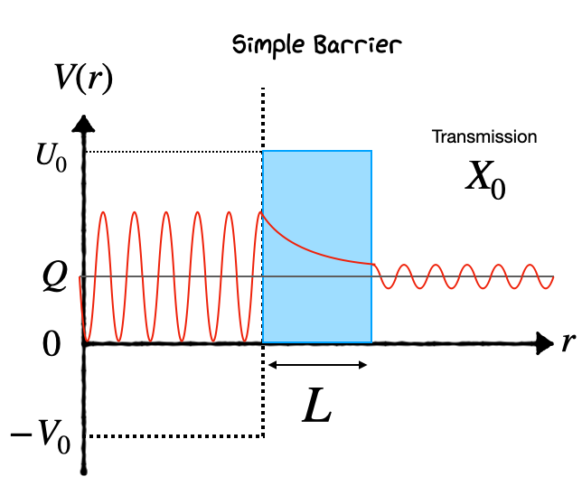
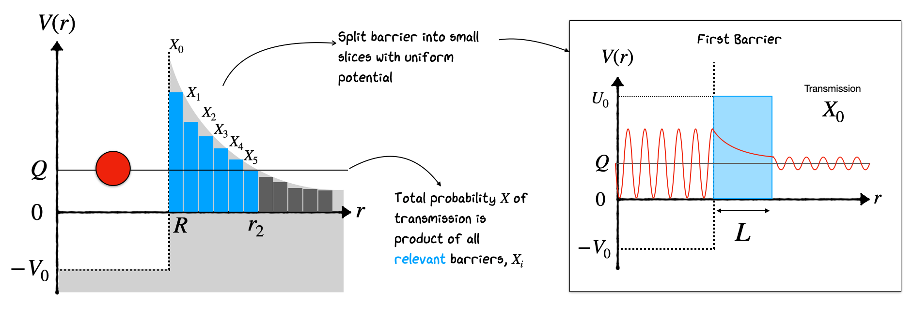

6. Radioactive Decays#
6.1. Introduction#
As we saw in the previous unit, nuclei in excited states can emit radiation in the form of gamma rays when nucleons move between different shell levels. This explains one of our three dominant sources of radiation. What about the others, \(\beta\) and \(\alpha\) decay?
These become a bit trickier to solve, as both decays lead to a fundamental change in the nucleon content inside the nucleus itself. As a reminder, in all cases of radioactive decay, we characterize the process in terms of three important numbers:
The probability of decay per unit time \(\rightarrow \lambda\)
The average time a nucleus lasts before decay \(\rightarrow \tau = 1/\lambda\)
The time for half the sample to decay (half-life) \(\rightarrow T_{1/2} = \tau \textnormal{ln}(2) = 0.693\tau\)
Radioactive decay itself is a stochastic process. That is why we define it in terms of the average times it takes bulk samples of material to decay. The main thing that governs the rate of this decay in a nucleus is actually whether the process is energetically favorable or not. In gamma radiation we saw it was almost always energetically favorable for an excited nuclear state to drop down some energy levels by emitting radiation.
What about other forms of radiation? In alpha and beta radiation the nucleus physically changes from one type to another. It turns out that a nucleus is likely to be unstable and decay through these channels if the net energy of the final products \(E_{f}\) is less than that of the starting nucleus \(E_{i}\). This energy deficit is defined as:
Decay is possible only if the \(Q\) value is positive, and the decay is not disallowed by any other selection rule or conservation law. The energy released in the decay will come out in the kinetic energy of the release fragments in the decay. Let’s consider both beta decay and alpha decay in turn to see how theoretical concepts of the nucleus help us understand their behavior.
6.2. Beta Decay#
In beta decay we typically see experimentally an emission of an Electron from the nucleus combined with a transmutation of a nucleus from one type into another with a lower neutron number. This is referred to as beta-minus decay and typically occurs in neutron rich nuclei which are trying to lower their energy by rebalancing their proton/neutron ratios.
In the early years of Beta Decay studies the process observed was highly mysterious and showed very different a behavior to Alpha Decay which was being studied at a similar time. This is illustrated by the Cloud Chamber image shown below. We see the decay of \(^6\)He into \(^6\)Li and a charged electron. We see two tracks, curving because there is a magnetic field applied. But from analysis of the plot it looks like energy, momentum and even Total Angular Momentum \(J\) are not conserved if we assume the interaction:
\( ^6He~\rightarrow~^{6}Li + e^- \)
Of course the reason is that there is a Neutrino emitted as well, but this escapes the detector and we don’t see it. There are actually four things we need to consider in beta-minus(-plus) decay not just the neutrino.
Beta Decay is a Three-body Process, unlike alpha decay (two body). We have to account for the energies and behavior of 3 objects - the nucleus, the beta and neutrino.
The electron (positron) and neutrino produced do not exist before the decay, we need to account for their formation.
The electron and neutrino are relativistic, unlike the alpha in alpha decay. This makes calculations of the energies and kinematics of the decay more complicated.
The energy of the beta emitted by the nucleus in question is not the same in every decay. We get a continuum of energies put to a maximum. In contrast to alpha decay and gamma decays where we get one “Mono energetic” particle depending on the energy levels or \(Q\) value considered.
An example to illustrate this behavior is:
Note how with an electron emitted in beta decay we get an Anti-neutrino (this is Lepton Number conservation in particle physics)
Beta decay is a common type of radioactive decay that involves the transformation of nucleons within the nucleus, resulting in the emission of beta particles and a change in the nuclear charge. There are three main types of beta decay: electron emission (\(\beta^-\) decay), positron emission (\(\beta^+\) decay), and electron capture (EC). Each of these processes alters the nucleus in distinct ways, driven by the weak nuclear force. Here’s a breakdown of their differences:
6.2.1. Electron Emission (\(\beta^-\) Decay)#
Process: In \(\beta^-\) decay, a neutron inside the nucleus is transformed into a proton, an electron (\(e^-\)), and an electron antineutrino (\(\bar{\nu}_e\)).
Equation: \(n \rightarrow p + e^- + \bar{\nu}_e\)
Result: The atomic number (\(Z\)) of the nucleus increases by one, while the mass number (\(A\)) remains unchanged. This process leads to the element changing to its next higher neighbor in the periodic table.
Driving Force: \(\beta^-\) decay occurs in neutron-rich nuclei, where the neutron-to-proton ratio is higher than that for a stable isotope of the element.
6.2.2. Positron Emission (\(\beta^+\) Decay)#
Process: In \(\beta^+\) decay, a proton is converted into a neutron, a positron (\(e^+\)), and an electron neutrino (\(\nu_e\)).
Equation: \(p \rightarrow n + e^+ + \nu_e\)
Result: The atomic number (\(Z\)) decreases by one, but the mass number (\(A\)) remains the same. The element changes to its previous neighbor in the periodic table.
Driving Force: \(\beta^+\) decay is favored in proton-rich nuclei, where the proton-to-neutron ratio is higher than the stable ratio for that element. It requires more energy than \(\beta^-\) decay, as the mass of the nucleus must compensate for the mass of the positron and the difference in mass between protons and neutrons.
6.2.3. Electron Capture (EC)#
Process: In electron capture, an inner orbital electron is captured by a proton in the nucleus, resulting in the formation of a neutron and the emission of an electron neutrino.
Equation: \(p + e^- \rightarrow n + \nu_e\)
Result: Similar to \(\beta^+\) decay, electron capture decreases the atomic number by one without changing the mass number, shifting the element to its previous neighbor in the periodic table.
Driving Force: EC also occurs in proton-rich nuclei and can be thought of as an alternative to \(\beta^+\) decay, especially in cases where the energy difference between the initial and final states does not favor positron emission. It strongly competes with \(e^+\) decay and is the only decay available to nuclei with a Proton Excess if the mass difference between the atoms is less than \(1~\textnormal{MeV}/\textnormal{c}^2\).
6.3. Energy Considerations and Occurrence#
Note we have to be careful in Beta Decay to consider the mass of everything including the Atomic Electrons, not just the nucleons. Hence the mass used are atomic masses, not the nuclear masses. We were less careful earlier when dealing with Binding Energy calculations and the SEMF.
*** \(\beta^-\) Decay:* This process is energetically favored in neutron-rich nuclei and does not require additional energy to occur since the mass of the neutron is greater than that of the proton.
\(\beta^+\) Decay and EC: Both require the nucleus to have excess energy because the mass of a neutron is less than that of a proton (when considering the mass of the positron for \(\beta^+\) decay or the binding energy of the captured electron for EC). These processes are less common than \(\beta^-\) decay due to the energy requirements and occur in proton-rich nuclei.
6.4. Transitions#
In beta decay, transitions between nuclear states are classified as “allowed” or “forbidden” based on certain selection rules derived from conservation laws and quantum mechanics. These rules are related to the spin (\(J\)) and parity (\(P\)) of the initial and final nuclear states, as well as the angular momentum and parity of the emitted beta particle and neutrino system.
Allowed transitions are those that require the least change in angular momentum and have no change in parity between the initial and final states. The simplest case is the “superallowed” transition, which involves no change in nuclear spin and parity (\(\Delta J^P = 0^+\)) and is the most favorable in terms of transition probability.
Superallowed Transition:
Here, \(\Delta J\) represents the change in total angular momentum quantum number, and \(\Delta P\) represents the change in parity; \(0^+\) indicates no change in either.
Allowed Transition: For “allowed” transitions (not superallowed), the changes are still minimal:
except for \(0 \rightarrow 0\) transitions, which are forbidden.
Superallowed and allowed transitions are characterized by a high transition probability because they involve minimal changes in the nuclear state, making them the most common type of beta decay.
Forbidden Transitions
Forbidden transitions occur when the change in angular momentum and/or parity does not meet the criteria for allowed transitions. They are less likely to occur due to the need for higher changes in angular momentum between the initial and final states. Forbidden transitions are categorized by the degree of “forbiddenness,” which corresponds to the change in angular momentum of the emitted particles.
except for \(0 \rightarrow 0\) transitions, which are still forbidden.
In general, the “n-th forbidden” transition is characterized by:
The transition probability decreases significantly with increasing order of forbiddenness, making higher-order forbidden transitions increasingly rare.
6.5. Beta Decay Matrix Element#
The probability of a beta decay occurring is proportional to the square of the matrix element, \(M\), which depends on the overlap of the initial and final nuclear wave functions and the operators involved in the transition. For allowed transitions, the matrix element involves simpler operators (e.g., Fermi and Gamow-Teller operators), while for forbidden transitions, more complex operators that include higher angular momentum components are required.
6.6. Example: Beta Decay of Nucleus X to Y#
Suppose we have a beta decay process where nucleus X decays to nucleus Y. Let’s say:
The initial state of nucleus X has a total angular momentum quantum number \(J_i = 2\) and positive parity (\(P_i = +1\)).
The final state of nucleus Y has a total angular momentum quantum number \(J_f = 1\) and negative parity (\(P_f = -1\)).
Step 1: Calculate the Change in Angular Momentum (\(\Delta J\))
Step 2: Determine the Change in Parity (\(\Delta P\))
Since the parity changes from positive to negative, there is a change in parity (\(\Delta P = 1\)).
Step 3: Classify the Transition
Using the calculated \(\Delta J\) and \(\Delta P\), we can classify the transition. For allowed transitions, we expect \(\Delta J = 0\) or \(\pm 1\) (excluding \(0 \rightarrow 0\) without a change in parity), and \(\Delta P = 0\).
In our example, \(\Delta J = 1\) fits the criterion for \(\Delta J\) in allowed transitions, but the change in parity (\(\Delta P = 1\)) indicates this is a forbidden transition.
Specifically, since there’s a change in parity and the \(\Delta J\) value fits within the first forbidden category (considering \(\Delta J = 0, \pm 1, \pm 2\) with a parity change), this would be a first forbidden transition.
For another example of an allowed transition in beta decay, let’s consider the beta-minus decay of tritium (\(^3H\)) to helium-3 (\(^3He\)):
Tritium (\(^3H\)) has one proton and two neutrons. Its nuclear spin and parity (\(J^P\)) are \(1/2^+\) in its ground state.
Helium-3 (\(^3He\)) has two protons and one neutron. Its ground state also has a nuclear spin and parity of \(1/2^+\).
In this decay, one of the neutrons in tritium is converted into a proton, emitting an electron (\(e^-\)) and an electron antineutrino (\(\bar{\nu}_e\)):
Given that both the initial and final states have spins of \(1/2\), the change in angular momentum is:
Both the initial and final states have positive parity (\(+\)), so there is no change in parity:
This means for the transition to be allowed:
\(\Delta J = \pm 1\)
\(\Delta P = 0\)
Note we’ve explicitly excluded the \(\Delta J=0\) case as we know the change in parity is \(0\). Our transition meets these criteria (\(\Delta J = 0\) and \(\Delta P = 0\)), indicating it is an allowed transition.
6.7. Alpha Decay#
Finally let’s turn our attention to alpha decay. In the context of the nuclear shell model, alpha decay can be understood in terms of the rearrangement of the nucleons in the daughter nucleus and how this rearrangement affects the nuclear stability. The shell model predicts that nuclei near magic numbers (where shells are either fully filled or empty) are more stable. Thus, alpha decay often moves a nucleus closer to these magic numbers, thereby increasing its stability.
While the selection rules for alpha decay are not as strictly defined as for beta decay in terms of angular momentum and parity changes, the energy and stability considerations play a crucial role. The key factors influencing alpha decay include:
Q-Value: The energy release (\(Q\)-value) in alpha decay is a critical factor. The decay can only occur if the \(Q\)-value is positive, meaning the mass of the parent nucleus is greater than the combined mass of the daughter nucleus and the alpha particle.
Nuclear Shell Effects: The shell model predicts that nuclei with a full shell of protons or neutrons (magic numbers) are particularly stable. Alpha decay is found for mostly higher \(A\) neutron rich nuclei and results in a daughter nucleus that is closer to these magic numbers.
Overlap and Tunneling: The probability of alpha decay is also determined by the quantum mechanical tunneling effect. As we will see alpha particles need to tunnel out of a potential barrier if they are to escape the nucleus.
Based on our understanding of the nucleus there are some important questions we need to ask for the alpha decay process:
Why are the \(\alpha\) particles emitted and not some other combination of nucleons?
Why is there such a range of lifetimes and energies? What is the relationship between the two?
What determines the frequency of \(\alpha\) decay?
How are the \(\alpha\) particles formed in the nucleus and emitted?
Do alphas carry information on nuclear structure?
One plot that begins to answer some of these questions is a comparison of the \(Q\) energy for different alpha-emitting particles separated by different radioactive decay series. This is called the Geiger-Nuttall relation, and it demonstrates that actually for many different series, there is a strong correlation between the radioactive half-life and the energy of the emitted alpha.
Notice also how steep the relation is in the Geiger-Nuttall plot (it’s a log scale). An alpha emitter that produces 8 MeV alpha particles is likely to have a half-life over 22 orders of magnitude shorter than one which produces alphas of 4 MeV kinetic energy. The Geiger-Nuttall relation is a fit to the observed data of the form:
where Z is the number of protons, Q is the energy released, \(b_{1}\) and \(b_{2}\) are constants. An equivalent form is:
It turns out that trying to understand why the data follows this shape leads us once again to the need for a quantum mechanical treatment of Alpha Decay. To explain the relation, it turns out we need to consider that the alpha forms inside the nucleus and then escapes by Quantum Mechanical Barrier Penetration.
The alpha is envisioned as a free-particle wavefunction subject to a combination of the Nuclear Potential binding it to the nucleus, and a coulomb potential that repels it from the other charged particles in the nucleus. Typically we expect a coulomb repulsion to pulse the charged alpha away from the rest of the nucleus, but in this case we are imagining that the alpha is inside the rest of the nucleus, therefore the remaining protons form a charged barrier that the alpha needs to tunnel through to escape. The Coulomb barrier arises because the electrostatic force is repulsive between two positively charged entities—the alpha particle and the rest of the nucleus.
As the alpha particle gets closer to the nuclear surface (from within), the electrostatic potential energy increases because the repulsive force increases. At the surface of the nucleus, this potential energy reaches a maximum, forming the Coulomb barrier.
Inside the Nucleus: While inside the nucleus, the alpha particle is bound by the strong nuclear force, which is attractive and much stronger than the Coulomb force at short distances. This force keeps the nucleons (including those in the alpha particle) together.
Escape Requirement: For the alpha particle to escape, it must have enough energy to overcome the maximum potential energy at the surface created by the Coulomb repulsion. Typically, the alpha particle’s kinetic energy (within the nucleus) is insufficient to overcome this barrier due to the energy binding it inside the nucleus.
Of course, in a classical model, if the Potential Barrier is too high, the alpha never escapes. In Quantum Mechanics, we allow Tunneling with a small probability that the alpha can penetrate the barrier. Calculating the ratio of the wavefunctions inside and outside and squaring gives the probability. We can do a simple calculation of this by considering the diagram of the potential below. We assume the alpha is pre-formed in the nucleus, oscillates around, repeatedly hitting the edge inside the nucleus until at some point it escapes by Barrier Penetration. Once formed, the alpha particle finds itself in a potential well created by the nuclear forces. Outside this well, there’s a potential energy barrier formed by the Coulomb repulsion between the positively charged alpha particle and the rest of the nucleus. Classically, the alpha particle would need to have kinetic energy greater than this barrier to escape the nucleus. However, typically, the alpha particle’s kinetic energy is less than the height of this Coulomb barrier
Notice how the Potential Barrier drops as \(1/r\). Rather than try to solve this, we can make a simple approximation that the barrier has a fixed height \(U_0\) and fixed length \(L\), and that the alpha has energy \(E\), as illustrated below. Also, the potential seen by the alpha particle is spherically symmetric, and so the quantum mechanical problem can be approached by first separating the variables into just a radial component.
 As a particle approaches the barrier, it is described by a Free Particle Wavefunction. When it reaches the barrier, it must satisfy the simplified Schrödinger Equation in the form:
Solving this QM equation of simple Barrier Penetration is beyond our scope here. What is important is the result. It gives us a value for \(X\), the probability of barrier penetration as:
where \(α = \sqrt{(2m(U_0 - E))/\hbar^2}\) is called the Gamow Factor, and \(A\) is a normalization constant we will call 1 for now to make the derivation simpler. Now, if we assume the alpha makes contact with the barrier once every second, then the average probability that the alpha leaves (a decay takes place) and the half-life is just related to the tunneling probability by:
If the alpha hits the barrier faster than 1 Hz, then we expect the probability that it leaves the nucleus to scale upwards as well. If we can work out the frequency that the alpha hits the barrier, which will be determined by its velocity and the size of the nucleus, and we know the height of the barrier \(U_0\) and the width \(L\) and the energy of the alpha \(E\), then we can find the half-life \(T_{1/2}\). We can then see if this agrees with the Geiger-Nuttall observation from data.
6.8. Alpha 212-Po Example#
The way to proceed is illustrated below, where we attempt to find the half-life of 212Po, which emits an 8.78 MeV alpha. First, we need to find the width of the barrier. For this, we need to know the Nuclear Separation \(R\), i.e., the distance between the center of the nucleus and the center of the alpha. Be careful that at this point the nucleus we are talking about is not A=212, but A=208, because we have removed the alpha.
This results in an estimate of the nuclear seperation as
We now find the height of the barrier by applying Coulomb’s Law at the nuclear separation as illustrated here
where \(k\) is equal to coulombs constant \(k = 1/(4πε_0) = 8.987552 \times 10^9 N m^2/C^2\). Now the distance at which the Coulomb Potential drops to the level of energy of the observed alpha is:
So the barrier width L and gammow factor is:
When assuming a ‘top-hat’ potential barrier this results in a transmission probability of $\( X = e^{-\alpha L} = e^{- (1.879) \cdot (17.9) } = 2.47 \times 10^{-15} \)$
The real frequency of the alpha hitting the barrier can also be estimated by determining how many times an alpha of energy \(8.78 MeV\) makes contact with the walls. $\( 8.78MeV = \frac{mv^{2}}{2} \rightarrow v=2.06 \times 10^{7} ms^{-1} \\ f=\frac{v}{2R} \rightarrow 1.14 \times 10^{21} s^{-1} \)$
For a given alpha, the combined Tunnelling Probability per second for emission is therefore the product of the barrier frequency and the transmission
The result is quite good. But note we could do better by modelling the potential as a series of decreasing barriers. As shown in the figure below we consider the decaying barrier as a combination of many fixed height barriers. The transmission probability through the entire set of barriers is simply obtained by multiplying all their individual transmission probabilities together.

This can be written as:
In the limit as \(\Delta r \rightarrow 0\), this analysis turns into an integral from R up to \(r_{2}\) based on the known form of \(V(r) \propto r^{-1}\)
No we can calculate the potential difference in the Gamow factor as based on the potential
We have defined \(r_{c}\) as the point where
Now subbing this back into our potential tells us \(V(r_{c})\) based only on \(Q\), \(r\), and \(r_{c}\) results in a potential dependent on \(Q\)
Subbing this into our integral gives us a transmission of the form
where we can pull the \(Q\) value out of the integral
Rearranging this ends up in a final form where the Gamow factor in our transmission factor is given by
In this solution
and we arrive at a relation for the Gamow factor’s correlation with \(Z\) and \(Q\),
Based on our calculations before the half-life is still proportional to the frequency that the alpha contacts the barrier and our new more realistic integrated transmission
where \(D\) is a new constant we have introduced based on the full form of Gamow values above. Taking the log of the equation gives us that below which ultimately ends up matching our Geiger Nutall form,
where \(a=ln(f)\) and \(b=D \cdot Z\). This confirms why we see this behavior in the first place. The exponential drop in half life for alpha emitters is due to every alpha undergoing tunneling through a falling potential barrier at the edge of the nucleus.
The procedures shown here can be applied to many nuclei to gain an estimate on the half-life and potential barrier properties if a decay process’ \(Q\) value is known. Importantly the free parameters in the Geiger Nutall form are dependent on the specific starting isotope (indicated by the lines in the GN plot), therefore measurements of the half life and \(Q\) value of one specific isotope can be used to estimate the half-life of any other nuclei in the chain provided the \(Q\) value can be calculated to a reasonable estimate (which it can with the SEMF!).
6.9. Summary#
In this unit we’ve discussed the final dominant radioactive decay channels and the effect these can have on the nucleon content of a nucleus, and the various factors that need to be considered when trying to calculate their probability and daughter product kinetic energies.
In the next half of this course we’ll start to look at different possible reactions with nuclei in more detail before looking at how knowledge of nuclear structure and decays can be used in applied physics.